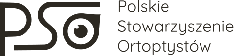
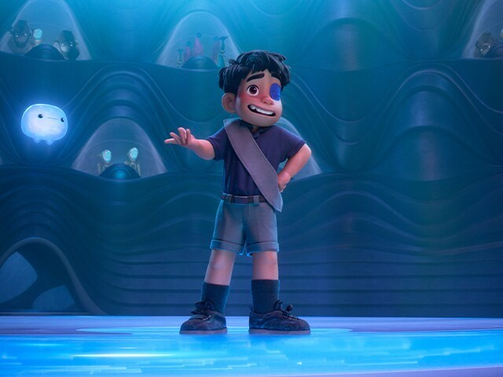
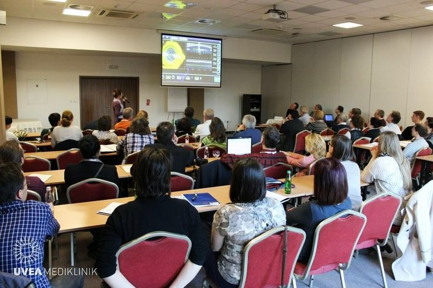
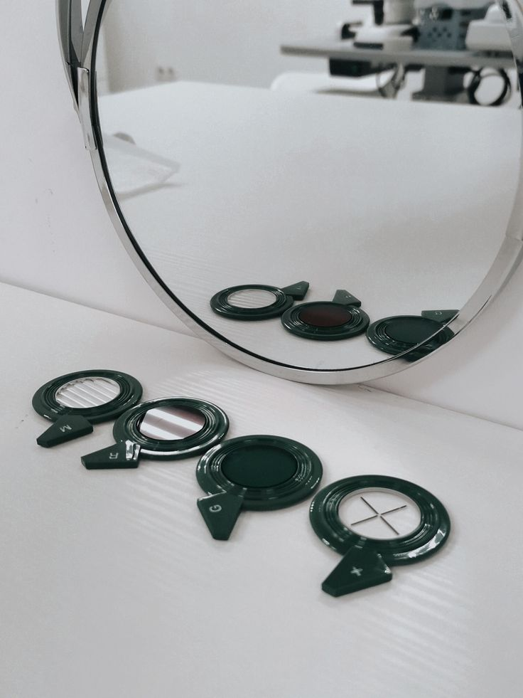

Nowy film Pixara wprowadza na ekran chłopca z opaską na oku – prosty, ale znaczący gest, który może wiele znaczyć dla dzieci noszących ją na co dzień.

Jakie są granice skutecznej terapii? Gdzie kończy się pomoc, a zaczyna ryzyko? Te pytania stanowiły punkt wyjścia do rozmów podczas majowego spotkania ortoptystów w Szczecinie.

Zapraszamy na bezpłatne szkolenie wprowadzające dla nowych członków naszego stowarzyszenia. Poznaj program i zapisz się już dziś!